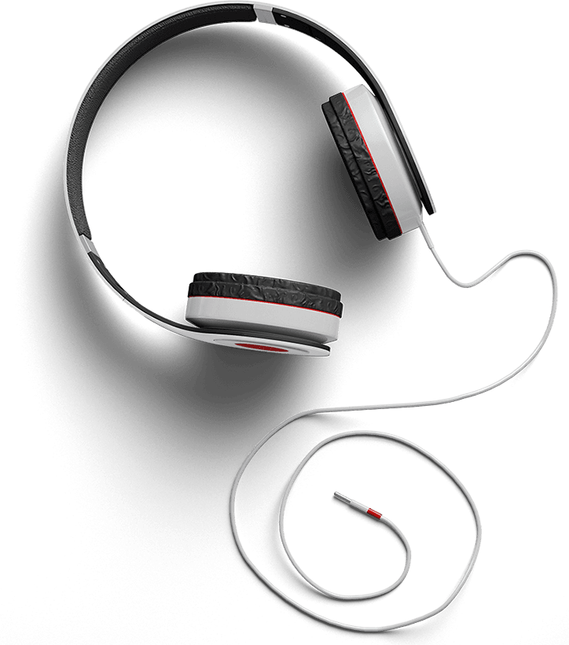
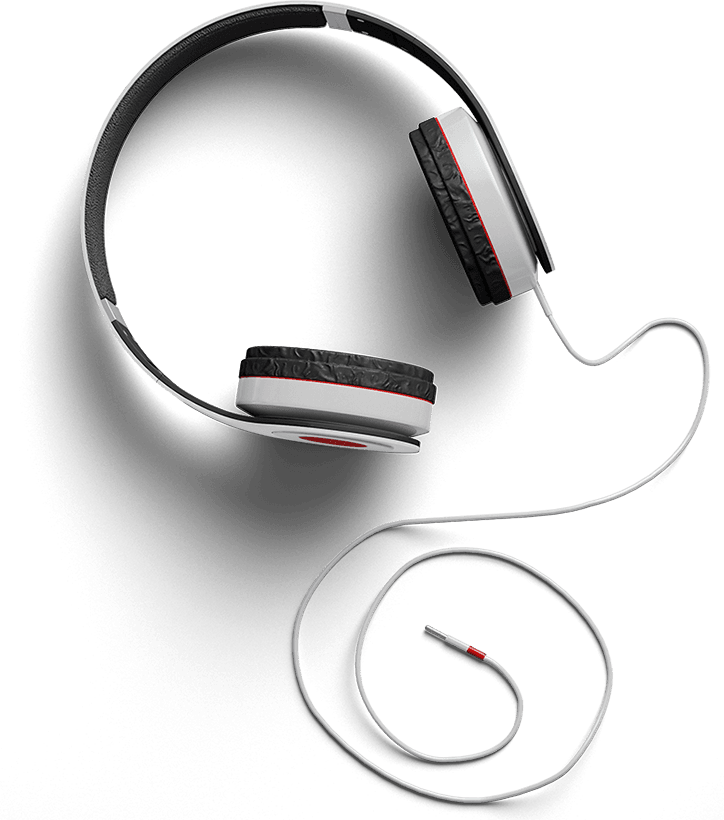

Welcome to LayerSlider
A new standard in web animations
6
version


Imagine & Create
Like millions of LayerSlider users!
We would like to show you how!
LET'S START IT!
with
LayerSlider
PowerBuilder
Creating is easy!
No need to coding
Building sliders has never been easier. Our drag & drop visual slider builder also supports smart features like undo/redo, multi-select, keyboard shortcuts etc. It also incorporates services like the Adobe CC Image Editor to provide Photoshop-like image editing capabilities. LayerSlider PowerBuilder is available for WordPress version.
NEXT SLIDE


 



Under the hood
API
LayerSlider

Build from the simplest to the most advanced sliders with advanced features! For example:
REVERSE THIS SLIDE
Try it!
CONTINUE